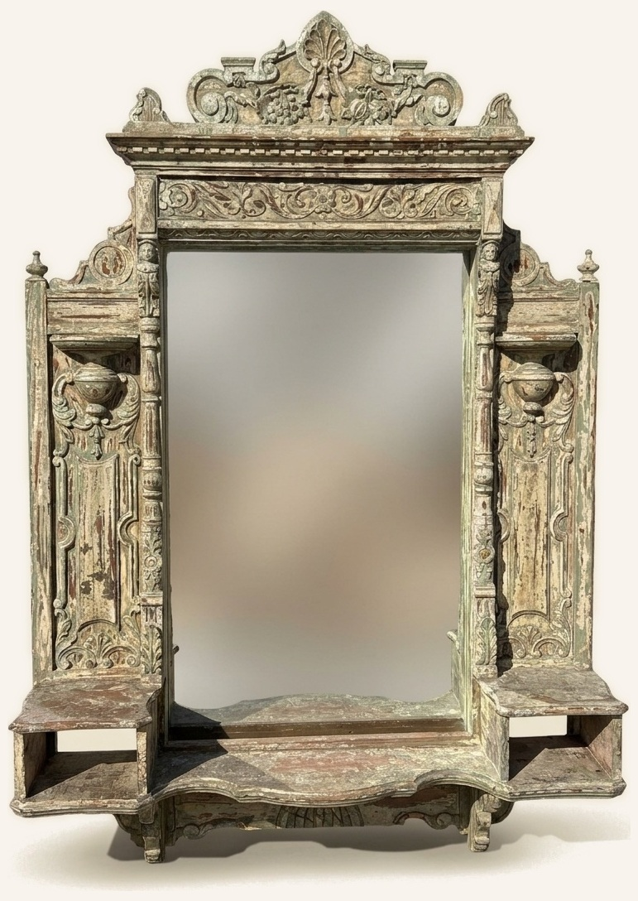
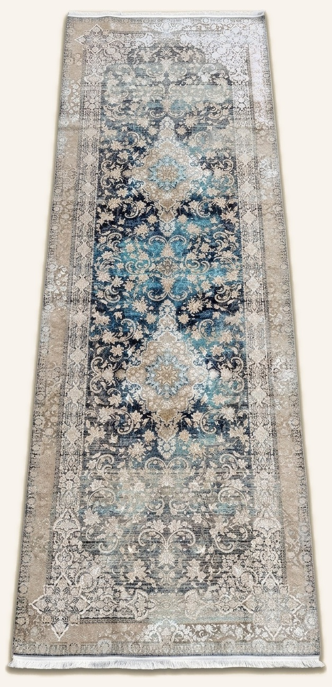

The Chapman Collection
Persian Carpets
|
Fine Furniture
|
Artworks
|
Accessories
|
Autumn warmth and Old World charm
As late October settles over Rancho Santa Fe and the evenings draw in, our thoughts naturally turn to pieces with rich history, architectural character and Old World charm.
Following last week’s showcase of new arrivals, this week we’re delighted to share a curated selection of Old World antique door cabinets, carved statement furniture and luminous textiles that we have just placed on sale for the autumn season.
|
Old World Cabinets and Statement Furniture
From custom made cabinets built around repurposed antique doors to finely inlaid Syrian chests and circa 1880 English carved oak armchairs, each piece brings timeless craftsmanship and warmth into the home.
|
Carved Antique Door Cabinet
Custom made with warm brown antique doors featuring carved borders, metal straps, a rustic latch and interior wood shelving (61½″ H × 34½″ W × 15¼″ D).
$2,600Sale $2,400
|
|
Old World Pale Blue Patina Cabinet
A custom made architectural cabinet showcasing antique panelled doors with a pale blue patina, iron hardware and deep shelving (88½″ H × 50″ W × 29½″ D).
$3,450Sale $2,800
|
|
Mother of Pearl and Bone Inlaid Chest
Intricately inlaid in geometric mother of pearl and bone motifs, opening to a red velvet interior, four small drawers and a pull out tray (28½″ H × 32½″ W × 21″ D).
$2,800Sale $1,950
|
|
Pair of Charles II Carved Oak Armchairs
Circa 1880 English Charles II style armchairs crafted in richly carved oak with scrolling stretchers, barley twist legs and tapestry upholstery (46″ H × 25½″ W × 23½″ D).
$3,800Sale $2,800
|
|
Monumental Architectural Scale
|

|
Over six feet tall, this hand carved architectural mirror features classical urn reliefs, scrolling crestwork, side display niches and a softly aged polychrome patina.
With its commanding presence and sculptural depth, it makes an extraordinary focal point for a grand entrance hall, living room or dining salon (75¾″ H × 53½″ W × 13″ D).
Regular $4,800Sale $2,950
|
|
Luminous Silk Carpets and Woven Textiles
|

|
Nearly ten feet in length, this luminous hand finished Persian silk Qum runner pairs intricate floral medallions with rich blues, turquoise and warm taupe borders.
Woven in fine silk with a soft, shifting sheen that catches the light from every angle, it brings remarkable warmth and color to a long hallway, gallery corridor or study (9′10″ × 3′3″).
Regular $2,450Sale $1,850
|
|
Persian Tabriz Medallion Carpet
Woven by hand with an elaborate central medallion and scrolling botanical motifs in warm autumn tones of ivory, copper and terracotta (10′5″ × 7′9″).
$2,800Sale $2,200
|
|
Handmade Belgian Tree of Life Tapestry
A richly detailed Belgian woven tapestry showcasing a classic Tree of Life design with songbirds, blossoms and a floral border on a deep red ground (76″ H × 53″ W).
$1,250Sale $695
|
|
|
We are open seven days a week in the heart of Rancho Santa Fe (Sundays by appointment), or simply reply to this note and let us know what catches your eye. We would be delighted to share additional photos, arrange an in home trial or help you find just the right piece for your home or office.
Hope to see you soon!
Warmly,
Melissa Chapman
|
|